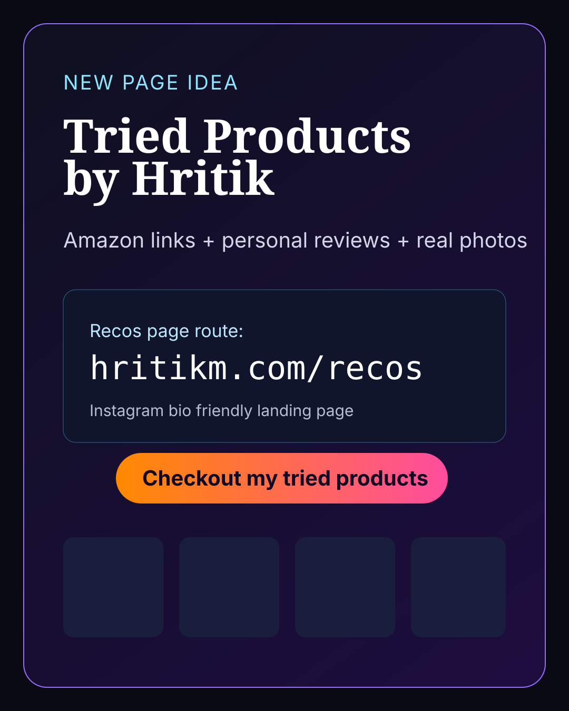

Desk Setup Essential
Logitech MX Master 3S
My daily driver mouse for work + side projects. Great battery and ergonomic shape.
Rating: ★★★★☆ · Worth it if you spend long hours at your desk.
View on AmazonTRIED PRODUCTS
Built for quick browsing from Instagram bio. I only add products I have personally used.

My daily driver mouse for work + side projects. Great battery and ergonomic shape.
Rating: ★★★★☆ · Worth it if you spend long hours at your desk.
View on AmazonPerfect for reading in bed and during flights. Battery lasts for weeks.
Rating: ★★★★★ · Best long-term purchase for reading consistency.
View on AmazonQuick cleanup and repeatable brews. Great for home and travel.
Rating: ★★★★☆ · Super reliable and beginner friendly.
View on Amazon